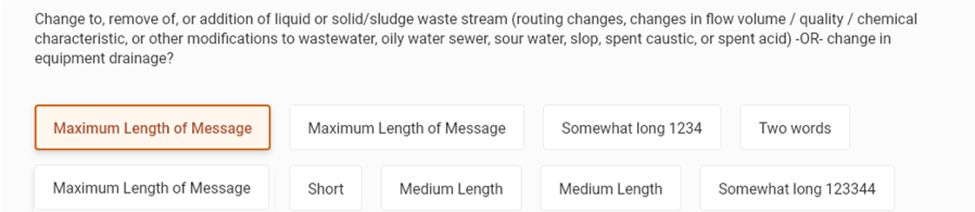
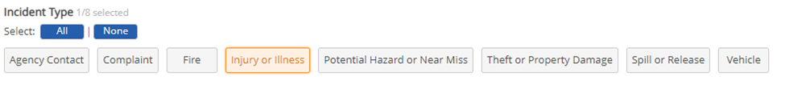
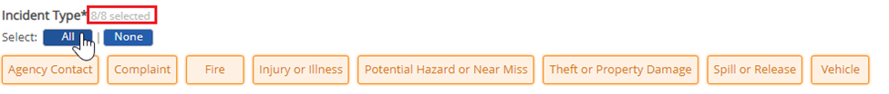
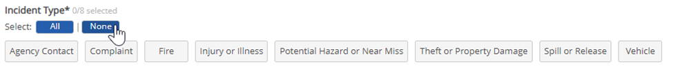
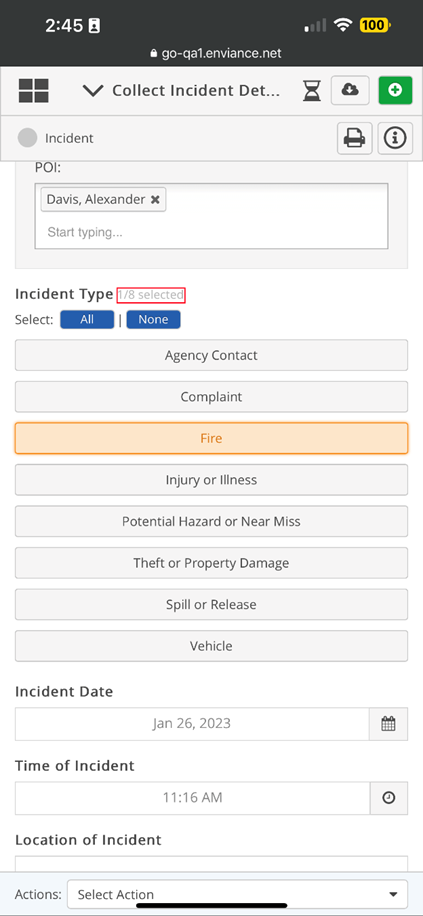
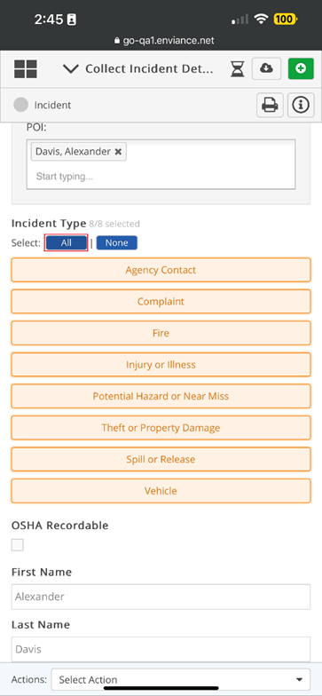
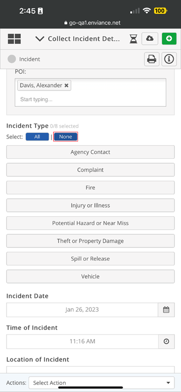
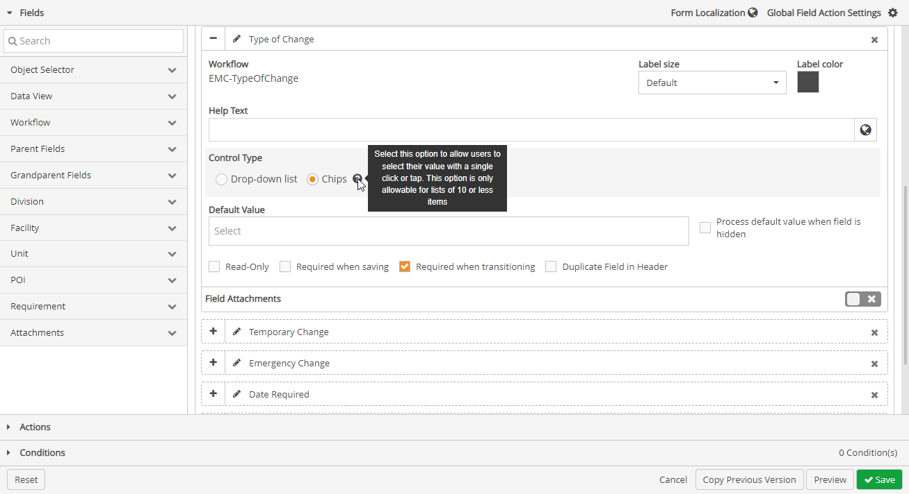
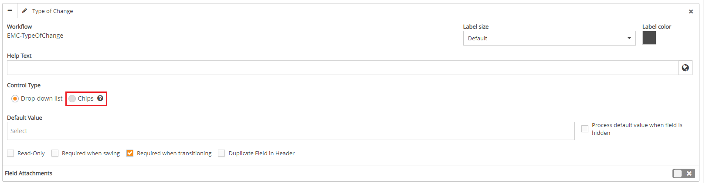

Single touch controls, allows users to answer questions on a form with a single click or tap. Since most apps using the Workflow Application Builder are to record audit and/or inspection results, answering questions with a single click or tap allows users to complete these forms on the field quickly.
When there are 10 or less possible answers to choose from, answers display as clickable buttons below the question for users to click or tap. When there are 11 or more possible answers to choose from, answers will display in a drop-down textbox, in which users will have to click, scroll, and select a response.
The following are examples of what end users will see when forms have been changed to single touch control (Control type = Chips).
When there are 10 or less possible responses for a question:

When multiple options can be selected and a user selects one option, 1/# will be shown as selected. See below:

Based on the number of options selected, the #/# will be updated accordingly, for example if there are 7 options and all are selected as the example below then 7/7 selected will be shown.
To select all options, you can click all options provided for a field individually, or in the Select section, click All.

To clear options selected, click None.

For a clickable list presented that isn’t within a dropdown textbox:

Multiple options can be selected for a field.
To select all options, you can click all options provided for a field individually, or in the Select section, click All.

To clear options selected, click None.

To apply single touch controls to form fields

By default, under Control Type, Drop-down list is selected, which provides answers for all questions in the form of a drop-down textbox regardless of possible answers.
Question(s) with less than 10 possible answers, will have the option to select Chips in designer mode, allowing answers to display under the question when filling out a form. Question(s) with 10 or more possible answers, will have the Chips option in designer mode greyed out
